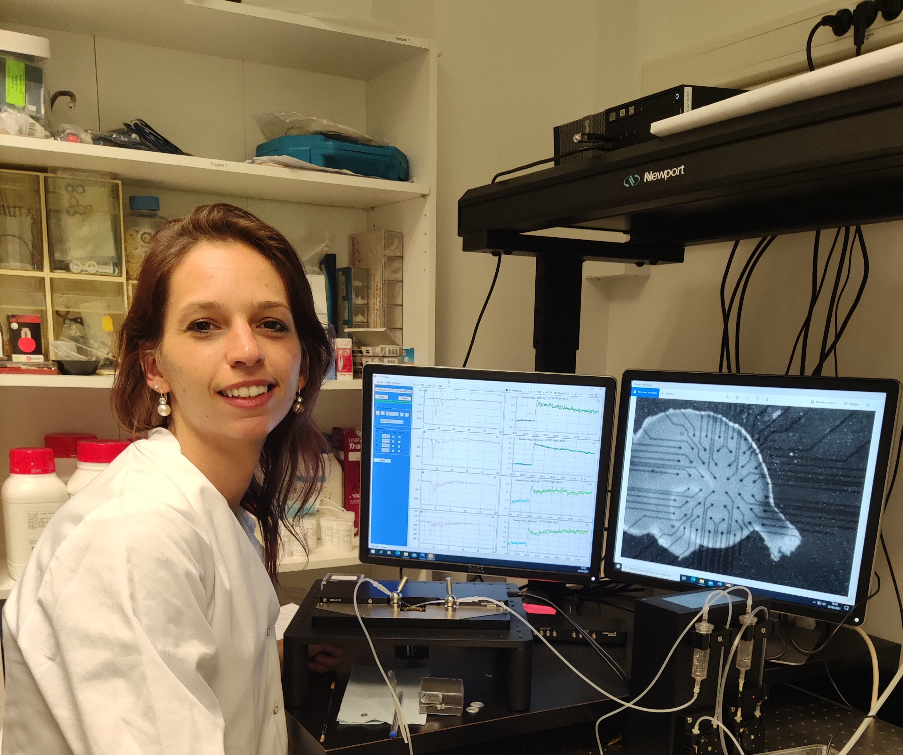

<html>
<head>
    <title>Candice Roux</title>

<link rel="stylesheet" href="public/structure/style.css"/>

</head>

<body>

<div class="navbar">
    <a href="public/CV.html">CV</a>
    <a href="public/about.html">About</a>
    <a href="public/contact.html">Contact</a>
    <a href="http://comete.unicaen.fr/membres/doctorants/cv-candice-roux-964305.kjsp?RH=1555494536728" target="_blank">Profil</a>

</div>


<div class="maintext">
<p><b>Candice Roux</b></p>

<p>Animée par la passion des Sciences de la Vie comme le traduit 
    mon parcours académique, je m’épanouis depuis 2 ans dans la 
    réalisation d’un doctorat en Neurosciences. Cette thèse aux approches pluridisciplinaires et complémentaires me permet d’acquérir une expertise tant sur le plan méthodologique notamment 
    en électrophysiologie que sur le plan scientifique à travers les 
    connaissances acquises dans le vaste domaine de la mémoire. A 
    l’issue de mon doctorat, j’aspire à l’accomplissement d’une carrière en industrie pharmaceutique en passant par la réalisation 
    d’un post-doctorat à l’étranger</p>

</div>


</body>


</html>